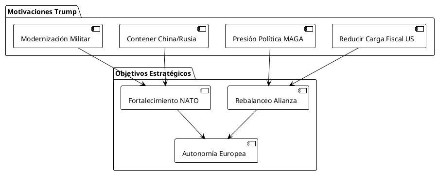
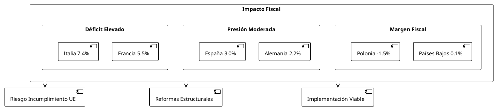
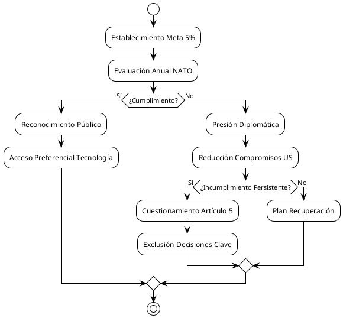
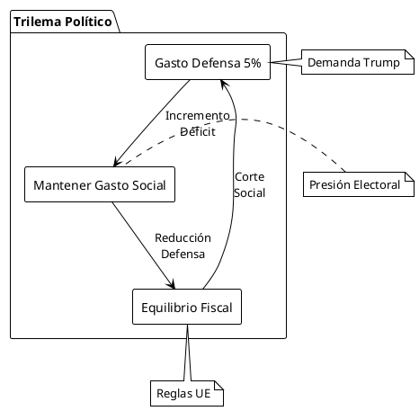
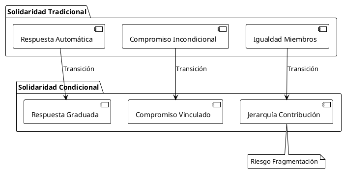
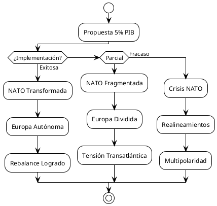

Impacto Gasto Defensa NATO 3.5% + 1.5%: Propuesta Trump
Impacto Gasto Defensa NATO 3.5% + 1.5%: Propuesta Trump
La propuesta de Donald Trump de elevar el gasto en defensa de los países NATO a un 5% del PIB (estructurado como 3.5% defensa directa + 1.5% seguridad ampliada) representa un cambio paradigmático en la financiación de la alianza atlántica. Este análisis examina las implicaciones económicas, políticas y estratégicas de esta demanda sin precedentes.
Marco Contextual y Antecedentes
Evolución del Compromiso de Gasto NATO
| País | 2014 | 2024 | Meta Trump 5% |
|---|---|---|---|
| Estados Unidos | 3.6% | 3.2% | Mantiene |
| Polonia | 1.9% | 4.1% | Cercano |
| Estonia | 2.0% | 3.4% | Comprometido |
| Lituania | 0.9% | 2.9% | Comprometido |
| Alemania | 1.2% | 2.1% | Desafío mayor |
| Francia | 2.1% | 2.0% | Desafío mayor |
| España | 0.9% | 1.3% | Desafío crítico |
| Italia | 1.5% | 1.6% | Desafío crítico |
Génesis de la Propuesta Trump
La demanda surge de múltiples factores estratégicos:
- Cambio en el balance geopolítico mundial
- Presión fiscal estadounidense por burden-sharing
- Amenaza percibida de China y Rusia
- Necesidad de modernización tecnológica militar

Análisis del Impacto Fiscal por Países
Impacto en el Déficit Público
La implementación del 5% representaría incrementos presupuestarios masivos:
| País | PIB 2024 (€T) | Gasto Actual (€B) | Gasto Requerido |
|---|---|---|---|
| Alemania | 4.3 | 90 | 215 (+125) |
| Francia | 2.9 | 58 | 145 (+87) |
| Reino Unido | 3.1 | 75 | 155 (+80) |
| Italia | 2.1 | 34 | 105 (+71) |
| España | 1.4 | 18 | 70 (+52) |
| Países Bajos | 1.0 | 17 | 50 (+33) |
| Polonia | 0.7 | 29 | 35 (+6) |
Consecuencias en Déficit
- Alemania: Riesgo de superar el 3% de déficit del Pacto de Estabilidad
- Francia: Presión adicional sobre déficit ya elevado (5.5%)
- Italia: Compromete reducción de deuda pública (137% PIB)
- España: Impacto moderado pero significativo

Mecanismos de Implementación y Acuerdo
Estructura Propuesta por Rutte
La propuesta del Secretario General NATO Mark Rutte estructura el 5%:
- 3.5% PIB: Gasto militar directo tradicional
- 1.5% PIB: Gasto en seguridad ampliada (ciberseguridad, inteligencia, infraestructura crítica)
Proceso de Negociación
| Fase | Período | Resultado |
|---|---|---|
| Propuesta Inicial | Enero 2025 | Resistencia UE |
| Consultas | Feb-Mayo 2025 | Reformulación |
| Cumbre La Haya | Junio 2025 | Acuerdo Parcial |
| Implementación | 2025-2032 | Gradual |
Mecanismos de Cumplimiento

Análisis Político: Ganadores y Perdedores
Ganadores
Estados Unidos
- Reducción burden-sharing de 68.7% a 53.8%
- Fortalecimiento industria militar
- Mayor legitimidad demandas futuras
Industria Militar
- Mercado expandido €400B anuales adicionales
- Consolidación tecnológica
- Empleos especializados
Europa Oriental
- Mayor seguridad percibida
- Inversión en capacidades nacionales
- Fortalecimiento posición geopolítica
Perdedores
Programas Sociales Europeos
- Presión sobre gasto público social
- Posible reducción servicios welfare
- Tensión política interna
Contribuyentes
- Mayor carga fiscal directa/indirecta
- Oportunidad coste inversión productiva
- Impacto inflacionario potencial
Pacto de Estabilidad UE
- Flexibilización forzada reglas fiscales
- Debilitamiento disciplina presupuestaria
- Tensión integración europea
Impacto en la Política MAGA
Dimensión Electoral
La propuesta satisface pilares centrales MAGA:
- America First: Reducción compromisos financieros US
- Strength: Proyección poder militar
- Fairness: Burden-sharing equilibrado
Tensiones Internas
| Facción | Posición | Argumentos |
|---|---|---|
| Aislacionistas | Escéptica | Sobre-compromiso |
| Halcones | Favorable | Deterrence |
| Fiscales | Condicional | Reducción US |
| Populistas | Ambivalente | Focus Doméstico |
Dilema: Defensa vs. Gasto Social
Trade-offs Presupuestarios
El incremento al 5% implica decisiones distributivas críticas:
Escenario 1: Mantenimiento Gasto Social
- Incremento déficit 2-3 puntos PIB
- Violación reglas fiscales UE
- Presión inflacionaria
Escenario 2: Reducción Gasto Social
- Tensión social y política
- Debilitamiento welfare state
- Resistencia electoral
Escenario 3: Incremento Fiscal
- Impactos competitividad
- Fuga capitales
- Recesión potencial

Implementación del Acuerdo: 32 Países NATO
Clasificación por Capacidad de Implementación
Tier 1: Implementación Viable (8 países)
- Estados Unidos, Polonia, Estonia, Lituania, Letonia, Reino Unido, Grecia, Noruega
Tier 2: Implementación Desafiante (12 países)
- Alemania, Francia, Países Bajos, Dinamarca, República Checa, Eslovaquia, Eslovenia, Croacia, Montenegro, Macedonia del Norte, Albania, Turquía
Tier 3: Implementación Crítica (12 países)
- Italia, España, Bélgica, Portugal, Luxemburgo, Islandia, Canadá, Hungría, Rumania, Bulgaria, Finlandia, Suecia
Cronograma Escalonado
| Período | Meta | Países Objetivo |
|---|---|---|
| 2025-2027 | 3.0% | Tier 1 |
| 2027-2030 | 4.0% | Tier 1+2 |
| 2030-2032 | 5.0% | Todos |
Principio de Solidaridad NATO
Reinterpretación Artículo 5
La propuesta Trump implica una reinterpretación condicional:
- Solidaridad vinculada a contribución financiera
- Cuestionamiento automático respuesta colectiva
- Gradación compromisos según compliance
Impacto en Cohesión Alianza

Mecanismos de Incumplimiento
Sanciones Graduales
Nivel 1: Diplomático
- Exclusión reuniones restringidas
- Reducción acceso información clasificada
- Presión pública bilateral
Nivel 2: Operacional
- Limitación ejercicios conjuntos
- Reducción intercambio tecnológico
- Menor prioridad en crisis
Nivel 3: Estructural
- Cuestionamiento Artículo 5
- Exclusión comando integrado
- Revisión status alianza
Precedentes Históricos
| País | Incumplimiento | Consecuencias |
|---|---|---|
| Francia | Salida 1966 | Reintegración '09 |
| Turquía | Crisis S-400 | Suspensión F-35 |
| Hungría | Divergencias | Aislamiento |
Impacto Sistémico y Proyecciones
Transformación Arquitectura Seguridad
La implementación exitosa implicaría:
- Militarización relativa Europa
- Autonomía estratégica europea acelerada
- Reconfiguración balance global poder
Escenarios Futuros
Escenario A: Implementación Exitosa
- NATO fortalecida pero transformada
- Europa militarmente autónoma
- Rebalance burden-sharing
Escenario B: Implementación Parcial
- Fragmentación interna NATO
- Europa de dos velocidades defensa
- Tensión transatlántica persistente
Escenario C: Fracaso Implementación
- Crisis existencial NATO
- Realineamientos geopolíticos
- Multipolaridad acelerada

Conclusiones y Recomendaciones
Evaluación Crítica
La propuesta Trump 3.5%+1.5% representa un test existencial para NATO que trasciende consideraciones puramente militares. Las implicaciones fiscales, políticas y estratégicas requieren una respuesta coordinada que balancee:
- Legitimidad de la demanda estadounidense por mayor burden-sharing
- Realidades fiscales europeas en contexto post-COVID
- Cohesión alianza frente amenazas externas crecientes
- Sostenibilidad política interna en democracias occidentales
Recomendaciones Estratégicas
Para Europa
- Desarrollo plan implementación gradual realista
- Coordinación respuesta UE para minimizar fragmentación
- Inversión prioritaria en capacidades críticas vs. expansión cuantitativa
- Diálogo social para legitimizar incremento gasto defensa
Para Estados Unidos
- Flexibilidad temporal en implementación
- Reconocimiento contribuciones no-financieras (geografía, hosting)
- Mantenimiento compromisos Artículo 5 durante transición
- Apoyo transferencia tecnológica para facilitar cumplimiento
Para NATO
- Clarificación metodología cálculo 1.5% "seguridad ampliada"
- Mecanismos compliance transparentes y graduales
- Preservación principio solidaridad en proceso transición
- Fortalecimiento diálogo civil-militar
La implementación exitosa requiere visión estratégica compartida que trascienda ciclos electorales nacionales y priorice la coherencia de la alianza atlántica como garante del orden liberal internacional.
Referencias Documentales
- NATO Official Documents
- NATO Defence Expenditure Report 2024
- Strategic Concept 2022
- Article 5 Framework
- Análisis Académicos
- Peterson Institute for International Economics (PIIE, 2025)
- Atlantic Council Defence Spending Analysis
- Brookings NATO Future Studies
- Fuentes Gubernamentales
- US Department of Defense Budget 2025
- European Defence Fund Reports
- National Security Strategies 2024-2025
- Media Especializada
- Defence News NATO Coverage
- Jane's Defence Weekly Analysis
- Breaking Defense Reports
— Documento generado para análisis estratégico - Junio 2025